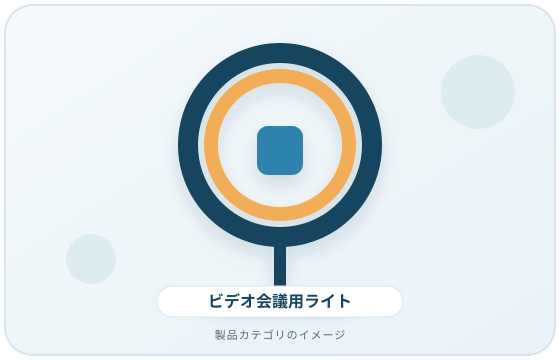
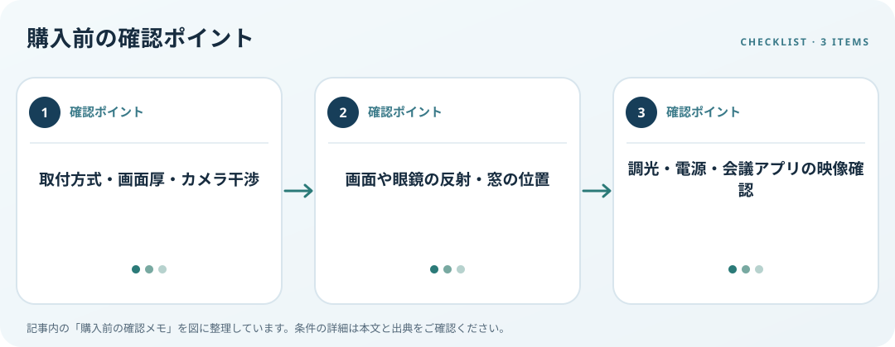

ライトの設置方式、画面や眼鏡への反射、調光、給電とカメラ位置を確認します。この記事では仕様の確認順を整理します。
画像・ボタンはAmazonアソシエイトリンクです。適格購入により紹介料を得る場合があります。

Amazon.co.jpで「Web会議 ライト カメラ」を探す ↗

取付場所とカメラを決める
モニター上、机上、三脚など設置方式を決め、カメラ位置との干渉を測ります。クリップ式なら画面の厚さやベゼル形状、Webカメラの幅を確認します。机置きではベース寸法と作業スペース、三脚では床面とケーブル経路を考えます。
反射・まぶしさを確かめる
ライト点灯時に画面や眼鏡に光源が映らない角度を想定します。OSHAは画面の反射を減らす配置や作業環境調整を案内しています。色温度や明るさの数値だけで映像を保証できないため、窓、背景、カメラの自動設定も含めて確認します。
電源と映像設定を照合
明るさ・色の調整、操作部、USB給電条件、ACアダプターの付属有無を確認します。Windowsではカメラプレビューを確認できる場合がありますが、機種やアプリで機能は異なります。会議アプリで映像を見てライトの場所を調整する手順を考えましょう。
購入前の確認メモ
- 取付方式・画面厚・カメラ干渉
- 画面や眼鏡の反射・窓の位置
- 調光・電源・会議アプリの映像確認
この記事は出典の公開情報を購入前の確認項目に整理したもので、特定商品の使用・実測・レビュー・ランキング・価格・在庫の調査は行っていません。購入時には利用機器メーカーの最新仕様をご確認ください。
出典
- Workstation Environment — OSHA（確認日: 2026-10-10）
- Manage cameras — Microsoft（確認日: 2026-10-10）
- Monitors — OSHA（確認日: 2026-10-10）